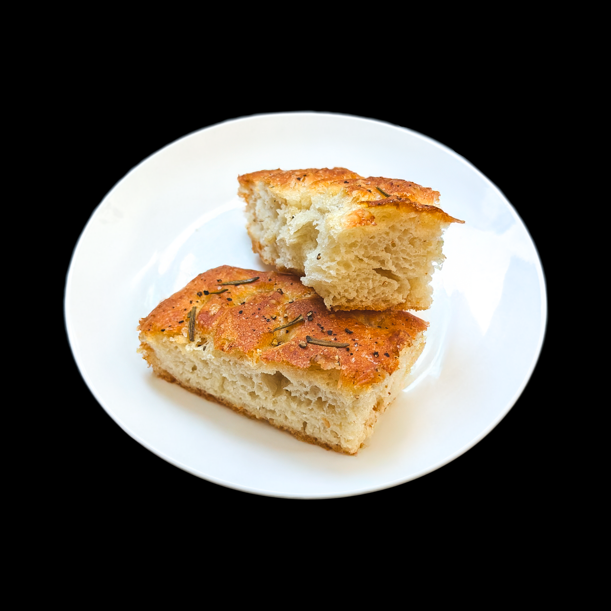
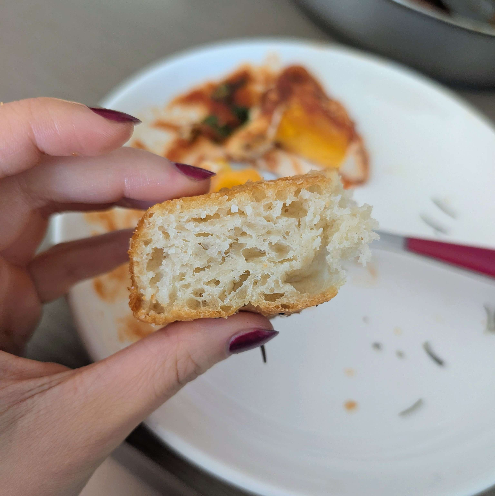
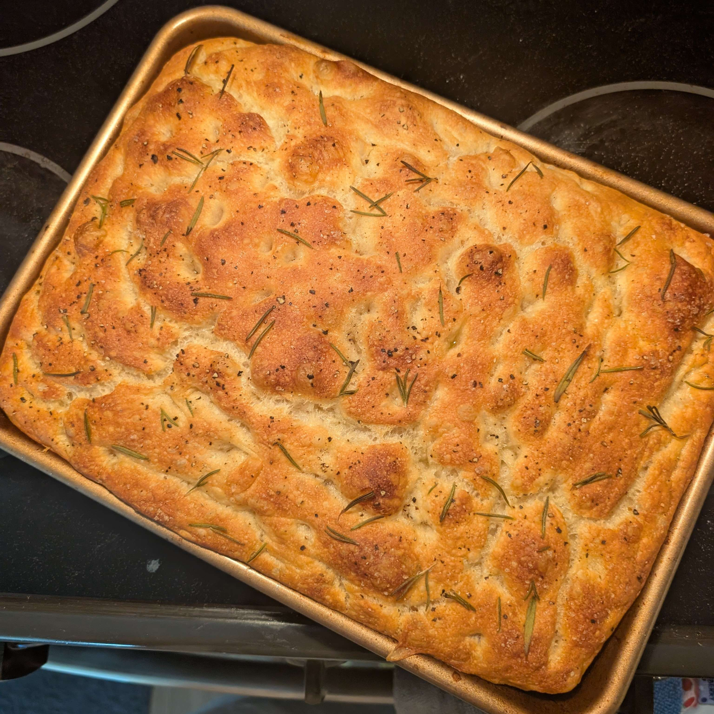
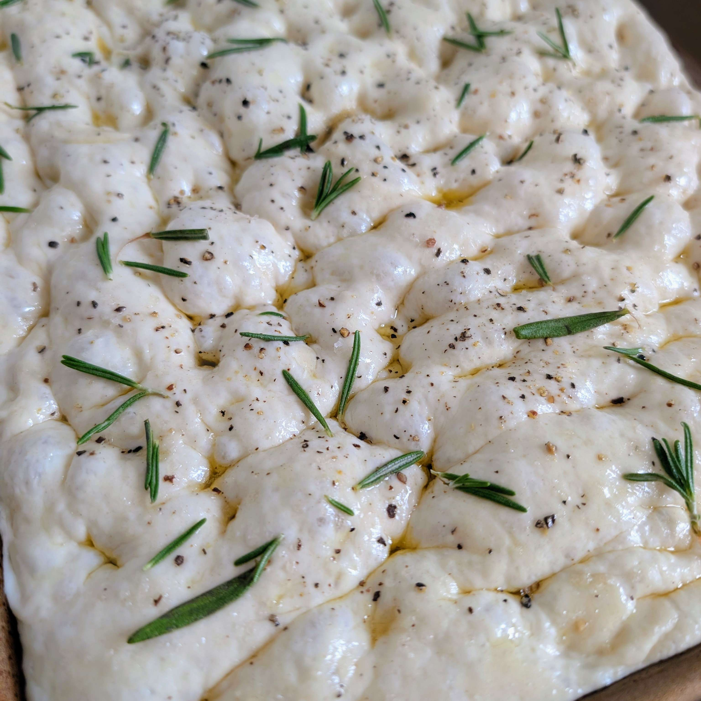

09/14/2025 - This recipe for focaccia is by Alexandra Stafford.

Written 09/15/2025, after baking.
This is my second time trying this recipe. I messed it up majorly during my first attempt. In some bout of confusion and brain fog, I had blanked during measuring my ingredients and I honestly had no idea how much flour or water I had put into my bowl. The texture of my dough, not surprisingly, was way off. The final result wasn't awful, but it was dense and crunchy, nothing like the platonic ideal of focaccia.
I wanted to try again after that attempt because I knew I could do much better. I just had to lock in and employ my counting skills (actually pay attention to the food scale). I'm glad I did, because this was some of the best bread I've ever had.
Instead of 10 grams of kosher salt, I ended up using 8 grams of coarse sea salt because that's all I had. I think the lower salt content in my dough had made it proof a bit faster, which I appreciated because I was short on time. For the same reason, I only proofed it in the fridge overnight for 10 hours, and the next day I did my second proof in a warmed oven for 90 minutes. I also only used 7 grams of yeast because that's how much was in my packet of yeast.
Completely shocked at how delicious this bread was. I had forgotten how good bread could be! This was fluffy and light on the inside (see the gallery for crumb pictures) and crispy on the outside. It reminds me a lot of a Chinese donut, or youtiao. Served with some white peach balsamic vinegar and herbes de provence olive oil, I felt like I was addicted. The way my boyfriend and I were slurping up that focaccia made us feel like medieval era peasants getting our hands on our first loaf of bread after weeks of meager rations and slop. The whole pan was gone in the span of about 24 hours.
Alexandra Stafford's Overnight Refrigerator Focaccia: ★★★★★. So simple. So cheap to make. Best bread you can get without going to a bakery or restaurant.
In conclusion, yes.


